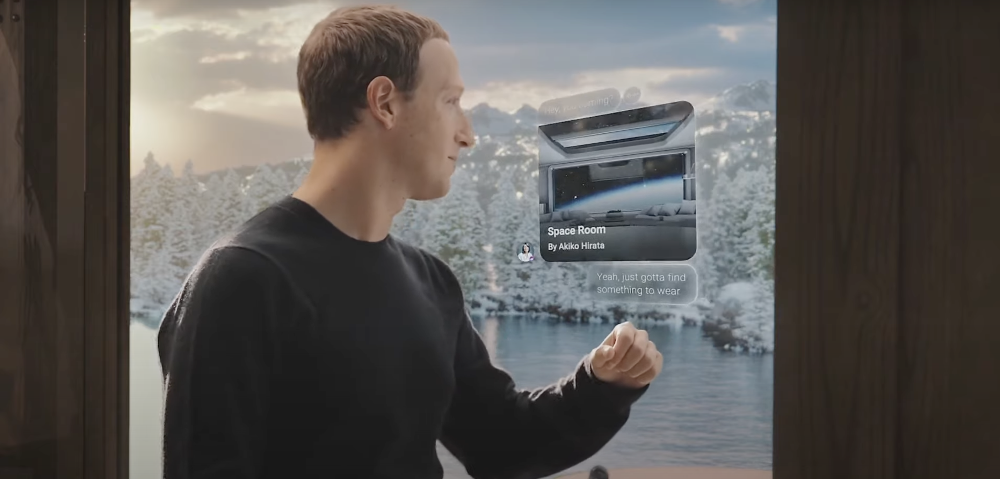
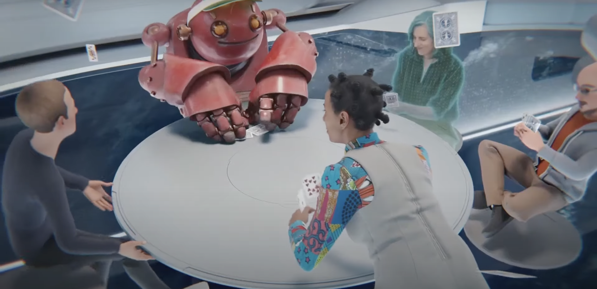
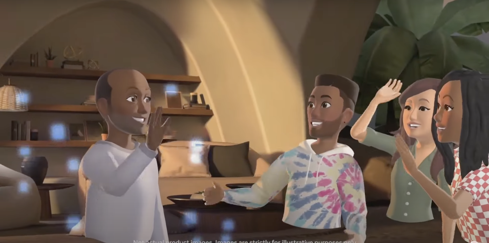
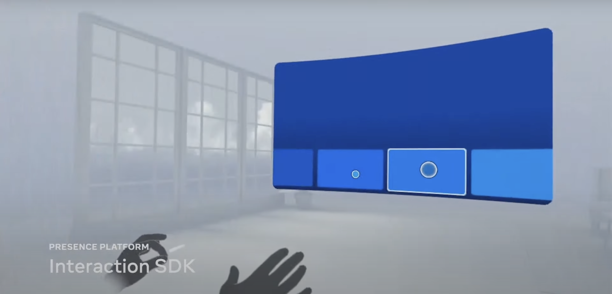
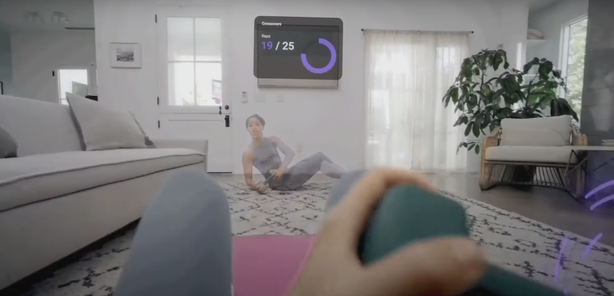
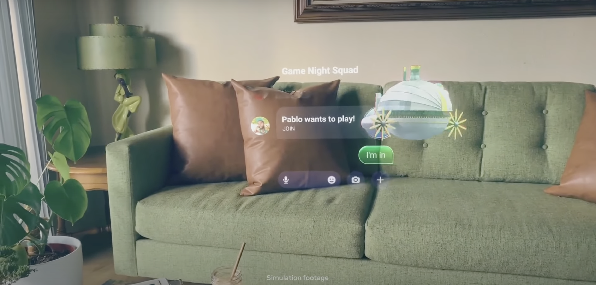

Facebook의 새로운 도약 "Meta"
Facebook이 새로운 이름으로 새로운 출발을 기약한다.


Facebook은 Facebook을 시작으로 Instagram, Whatsapp, Oculus VR 등 다수의 기업을 인수하면서 어찌보면 SNS 시장을 굉장히 많은 지분을 갖고 있다고 해도 과언이 아닐 것 이다. 저번 Facebook 서버 문제로 Instagram과 Whatsapp이 작동되지 않았던 이유도 여기에 있다 할 수 있겠다. 그랬던 Facebook이 왜 갑자기 Meta로 새로운 도약을 하게 되었을까? 이는 발표 영상을 해석하면서 개인적인 생각과 같이 알려주겠다.
이건 번외이긴 하지만, Facebook의 UI와 속도는 개인적으로 별로다. 맘에 안 든다.
발표 시작을 하면서 mark가 이렇게 말했다. "Hey, welcome to connect.". 직역하면 연결에 환영합니다 라고 볼 수 있는데 오역을 하자면 약간 SNS 서비스처럼 연결된 상태 즉 소통에 오신 걸 환영합니다 라고 말하는 듯하다. 처음부터 까고 가는 듯하다. Meta (구 Facebook) 은 어디있든 뭐든 사람과 사람을 연결하려는 것이다.
Metaverse을 중요시 여기는데 뭐 이전부터 주식시장이나 이런저런 곳에서는 굉장히 많이 언급이 되고 있었다. Metaverse 를 간단히 말하면 우리 삶의 가상의 현실과 같은 것이다. 대표적인 예를 들면 제페토, Earth2가 있다. 가상과 같은 현실? 심즈도 그렇게 포함이 될거 같다. 이 Metaverse의 범위가 굉장히 넓다보니 어디부터가 Metaverse고 어디까지가 Metaverse인지 말하기가 쉽지 않다. 근데 왜 지금 시점에 Facebook이 이름을 바꿔 가면서 리뉴얼을 할까 싶다. 이는 발표 영상에서도 말해주고 있다.
사진과 같이 현실에 존재하고 있는 mark는 가상의 공간에서 현실의 사람들과 회의 장소로 "Space Room"으로 초대를 받는다. 너무 멀게 생각하면 멀지만 사실 작년 코로나로 인해 거의 대다수의 사람들이 사진과 같이 회의를 하거나 수업을 하였다. 우리는 선생님 혹은 상관에게 Zoom, google meet 등 초대 링크를 받아서 어느 가상의 장소를 마련하여 각자의 기기로 활동을 이어 갔다. 다만 Meta에서 하고자 하는 것은 이미 생활에 녹여져 있는 Metaverse를 현실과 가상현실 그 부분을 없앨려고 하는 것 같다. 우리는 지금까지 2D의 화면에서 평면적인 데이터를 보고 있었다면 Meta는 입체적으로 현재 살고 있는 현실과 유사한 모습을 보여주고 있다.
바로 이런식으로 말이다. mark를 포함한 4명 모두 가상의 회의 장소인 "Space Room" 무중력(?) 회의실에 모여있다. 아니 근데 무중력이면 현실에서는 어캐 있나?
발표 중에서 신나게 언급한 부분이 있는데 바로 "Horizon Home"이다. 가상의 집을 말하는 것이다. 우리가 서로의 Facebook으로 그 사람에 대해 알아가듯 일종의 프로필 같은 역할이 아닐까 싶다.
뭐 사진에서 보이는 것처럼 자신의 사람을 초대해서 같이 놀거나 모임을 갖을 수도 있고 혹은 카페를 갈 수도 있고 사람들을 어디에서나 만나게 만드는 것이다.
그 다음으로 Horizon World를 소개 했다. Horizon Home이랑 비슷하다만 이는 직접 뭔가를 창작 할 수 있는 일종의 놀이터이다.
가장 대표적으로 비교할 만한 것이 있다면 Minecraft, Fortnite 와 같은 게임이 있다. 뭐 Metaverse 하면 굉장히 오래전부터 언급이 되어오던 요소라고 할 수 있는데 가상의 공간의 대표적인 사례이다. Fortnite는 이제 더이상 간단한 게임에서 벗어나서 범위가 굉장히 커졌다고 해도 과언이 아닌데 작년 Travis Scott과 협업을 통해 뮤직비디오와 최초공개, 공연도 모두 Fortnite에서 이루워졌다. 그 뿐만 아니라 올해 중순에는 스페인의 명품브랜드인 Balenciaga와 협업을 하면서 실제 옷을 판매하는 동시에 Fortnite 게임 내에서도 Balenciaga의 의류가 판매 되었다. 해당 관련 기사

Work in the Metaverse 라고 소개된 것은 사실 집에서 일하는 우리의 모습과 크게 다르진 않다. 다만 화면에 국한되지 않고 안경을 쓰고 굉장히 넓은 범위에서 바라볼 수 있도록 하는 것이다. 당신이 어디 있든 Metaverse에 입장 할 수 있는 장치만 갖고 있다면 어디서든지 출근이 가능하다. 근데 그렇게 되면 연차 개념이 사라지나? 그건 좀 싫은데.
Meta는 현재 Facebook 계정들로 회의나 가상의 장소를 만드는 시도를 해오고 있다고 하였다. 발표에서 인정 하듯 이게 쉽사리 되진 않을 거라고 한다. Meta를 회사명으로 지은 이상 그들이 하고 싶은건 단 한가지다. 현실의 사람들을 가상의 사람들로 만들어 그들의 새로운 인격체를 만들 수 있도록 하는 것이다. 뭐 너무 과장이 아니냐 이럴수도 있겠지만 회사 업무, 친구들의 간의 만남 등 오프라인에서 시간과 장소를 정하고 만난다. 만일 Metaverse가 이루워진다면 우리는 만날 시간과 장소를 Metaverse안에서 정한다. 그리고 친구들을 만나기 전에 Horizon Home에서 옷을 고르고 원하는 화장법이나 머리를 하여 가상의 공간 Horizon World에서 만나서 논다.
좀 더 재밌는 예시를 하나 들자면 부산에 있는 사람과 서울에 있는 사람, 미국에 있는 사람과 한국에 있는 사람과 서로 직거래가 가능하다는 것이다. 당근 마켓이든, 번개 장터든, 이베이든 서로 Horizon World 어디에서 몇시에 만나자고 하여 서로 해당 장소에서 직접 물건을 보고 바로 그 자리에서 거래를 하고 현실의 나는 배송을 기다리면 된다. 어쩌면 현실의 내가 아닌 가상의 나를 위한 물건을 구매 할 수도 있다.
자 여기 까지가 이제 중점적인 상품 설명 이었다면 이제는 개발자들을 위한 platform 설명이다. Meta가 정말 현실과 유사한 세계를 만들기 위해서는 이질감이 없지만 가상이라는 점을 느끼게 만들어야 한다. 말이 어렵지만 간단하다. 현실이 아님을 자각하는 동시에 불쾌함이 없다는 것이다.
현재 여러 VR 기기들의 가장 큰 문제는 컨트롤러로 할 수 있는 것이 그리 많지 않다는 것이다. 아 물론 물건을 잡고 뭐 던지는 건 가능은 하다만 세부적인 행동이 어렵다는 것인데 지금까지 있던 VR의 Hand Reaction은 리모콘을 두개 들고 리모콘의 기울기, 방향, 위치에 따라서 Software로 간단히 구현을 한 것이다. Meta는 간단히 안경과 헤드셋만 쓰고도 현실에 가까운 가상 세계를 만들고 싶은 것이다. 이를 보완해주기 나온 것이 바로 Interaction SDK이다. 참고로 SDK는 Software Developer Kit로 개발자들에게 어떤식으로 개발을 하면 된다라고 알려주는 툴이다. 간단히 생각하면 그냥 내가 이케아 조립식 서랍을 샀는데 조립을 하려면 도구가 있어야 한다. 바로 SDK가 이케아 서랍장을 만들기 위한 도구인 것 처럼 Interaction SDK도 Metaverse에 Hand Gesture 를 인식하는데에 도움을 주는 도구라고 생각하면 쉽다.
영상에서는 굉장히 짧게 나왔는데 내년에 Meta에서 VR기기 판매를 목표로 두고 있는데 Meta는 이를 Project Cambria라고 부르고 있다. Facebook 시절 Oculus를 진작에 인수를 하고 칼만 갈아오던 중 드디어 빛을 발휘하나 싶은 순간이다. 외관상 크게 달라질 것은 없어보이다만 컨트롤러가 기존과는 다르게 좀 더 많은 동작을 수행 할 수 있을 것으로 보인다.

지금 까지의 VR은 고정된 사람의 얼굴에 목소리의 데시벨에 따라 그저 간단한 모습만 보여주었다. 뭐 입 모양을 움직이던가 아니면 캐릭터의 머리 위에 말하는 중이라는 표시를 해주던지 등등... 가상의 현실이라는 이름을 달고 운영하기에는 부족하다. 이를 보완하고자 Project Cambria에서 다양한 발전 중에서 대표적인 예시를 보여준 것으로는 표정에 따른 반응이다.
현실에서 웃거나 울거나 화내거나 하는 표정들의 변화를 Metaverse에서도 그대로 표현을 하는 것이다. 최대한 현실과 같은 모습을 보여주기 위해서이다. 가상의 면접을 진행하고 있다 하면 그 사람의 표정, 생각 등이 굉장히 중요할 것이다. 그런 문제를 해결하고자 하는 거다. 각종 센서를 이용하여 눈동작, 눈썹, 얼굴의 근육 들을 찾아 인식을 하여 사람의 표정을 유사하게 구현을 하는 것이다.
Mark는 Project Cambria에 대해 얘기를 하면서 이렇게 말했다. What about unlocking more mixed reality?
Mixed Reailty 라는 말을 좀 더 생각해보면 현실과 가상 현실이 섞인 모습을 말하는 것이다. 뭐 위 사진 처럼 가상의 강사가 자신 앞에 나타나서 홈트레이닝을 도와주고 가이드도 나오고 정확한 동작을 따라하는데 도움이 될 수 있도록 한다. 또한 영상에서는 회의 내용을 검토하면서 Metaverse에 켜둔 Broswer로 내용을 확인하고 현실에서 팬을 들어 메모를 한다. 즉 가상 세계와 현실 세계를 섞어둔 모습을 볼 수 있다는 것이다. 이는 Headset에 있는 센서와 카메라 등을 통해서 카메라의 위치와 관점, 동작, 깊이 등을 활용해 사용자가 손을 들고 있는지 놓고 있는지 현실 세계와 가상 세계를 구분 할 수 있게 도와준다.
Mark는 마지막으로 Nazare Glasses에 대해 얘기를 하였다. Nazare Glases는 외관상으로는 우리가 안경점에서 보는 안경과 굉장히 닮아 있지만 Nazare Glasses를 쓰면 Metaverse에 입장을 하게 된다. 배터리, 센서, 스피커 등 이 모든 것을 단 5mm 에 넣는 것을 목표로 하고 있다고 한다.
총정리 및 개인적인 생각
글을 쓰면서 많이 언급은 많이 했지만 사실상 우리는 Metaverse 안에 생존하고 있다. 다만 지금과는 다르게 활동 범위가 많이 늘어나게 것이다. Meta에서 구현하는 것은 현실세계와 가상 세계의 구분 점을 애매하게 만드는 것이다. 즉 사람과 사람간의 소통이 쉬워지고 언어의 장벽이나 거리감을 없애자고 하는 것이다. 새로운 그들 만의 세상을 만들고자 하는 것이다. 정말 극단적으로 몰아가면 우리 스스로가 영화 매트릭스와 같은 모습을 만든 거고 아니면 Wall-E에 나오는 것 처럼 의자 위에서 그냥 살아가는 것이고... 지금 당장 앞으로의 일들은 생각할 수 없다.
많이 언급되진 않았지만 Computer Vision에서는 3D 기술들의 응용 범위가 늘어나고 있다. 객체인식에 객체분류 이제는 3D, 삼차원 객체 인식까지... 다만 이는 모두 사람의 눈과 유사하게 만들기 위해서이다. 이제는 우리 주변의 물체들 뭐 예를 들어 자동차든, 휴대폰과 같은 필요는 하지만 없어도 크게 문제가 되지 않던 "물건" 들을 넘어 우리의 삶 자체와 연결 되고 있다. 다시금 Facebook.com 서버가 죽었던 일 처럼, KT 자체가 30분간 죽었던 것 처럼 잠깐의 실수 혹은 오류는 앞으로 이제 우리의 삶을 바꿀 것이다. 이를 어떻게 받아들이고 어떻게 운영하는지가 중요하고 변화에 얼마나 적응을 빨리하는지도 중요시 여겨질 것이다. 모든 것에는 변화가 있어왔다. 처음에는 별로라고 하던 것들도 이제는 우리의 일상에 녹여 들어와 있다. 거부감에 익숙해지면 그리 거북해보이지 않는다. 이상이다.